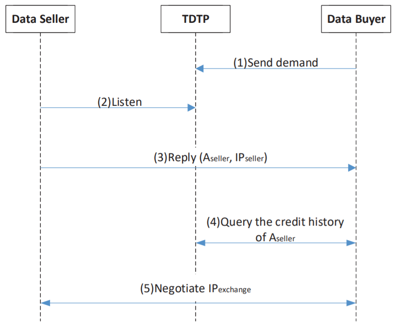
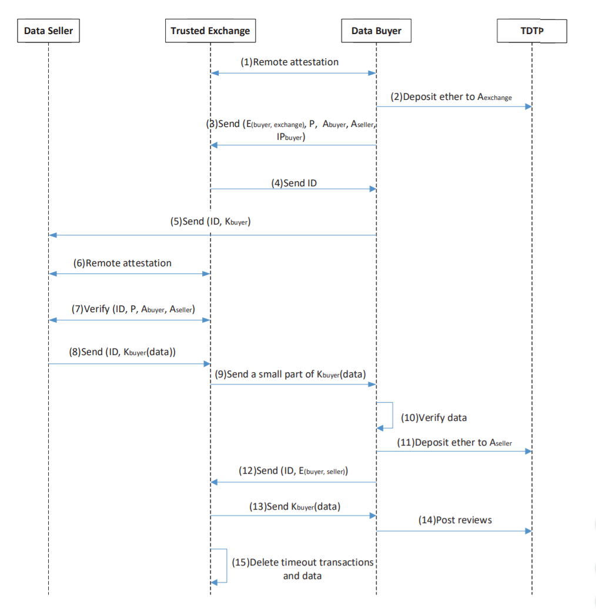

1.他们为什么做这项工作？（做这项工作的背景和目的）
数据交易导致数据市场兴起，但是常规的数据市场往往是不诚实的集中交易平台，有着许多诸如盗取，倒卖数据以及收到买家付款后拒绝发送数据等劣行，因此有必要提出一种可信的公平数据交易平台来维护双方利益。
提出了一种基于区块链的可信执行环境（TEE）的数据交易框架【BDTF】
2. 针对这项工作，别人做过了哪些工作，有哪些缺陷
Wang等人 （参考文献[12]）提出了一种基于比特币系统的数据交易方案。→他们的方案并不保证由数字内容销售商提供的RSA私钥是用于加密的RSA私钥。
赵等人 （参考文献[13]）提出了一种基于区块链的大数据市场公平数据交易协议，该协议集成了环签名、防双重认证签名和相似性学习，保证了交易数据的可用性、数据提供商的隐私性和交易的公平性。 →在他们的计划中，市场经理可能会与数据卖家勾结，欺骗数据消费者。
Dib等人（参考文献[14]）提出了一种基于区块链的新框架，该框架结合单独的安全环境在数据之上执行模型，以保护个人数据的机密性→他们假设他们系统中的数据所有者是诚实的，这不适合大多数数据交易场景
戴等[15]提出了SDTE，一种基于区块链的数据交易生态系统。他们这个通过类似投票的方式来奖励数据卖方，从而实现在多个卖家中完成交易。→如果交易中有太多恶意数据卖方，那么诚实的数据卖方将无法获得合理的赔偿。
3. 他们大概是怎么做这项工作的？（一两句话概括）
本文提出了一种新的基于区块链的数据交易框架，具有可信执行环境为公平交易提供了可信分散平台（BDTF）。
使用TEE建立可信交易所，协助交易的公平支付。卖方先向可信交易所提交数据，买方可在可信交易所中验证数据是否是自己需要的，当可信交易所监测到买方已经支付给数据卖方相应的金额后，可信交易平台才会将数据给买方。
4. 他们的这项工作，做的好不好？好在哪里？
这项工作TEE建立了一个可信交易所来协助交易的公平进行，这一点我觉得在区块链中比较有创新，在买卖双方加入一个可信的交易所来实现商品（数据）的交易。同时很好地抵御了诸如恶意买家，恶意卖家和恶意可信交换场所的攻击。
5. 他们这项工作，有没有不好之处，不好在哪里？
我就基于我的理解来说一下我认为的一些疑惑？
首先虽然这种方法在区块链点对点之间扩展性加入了一个第三方可信交易场所来实现公平交易，但是这样似乎是否又有一点偏离区块链的主题呢（违背了去中心化）？
在防止恶意卖家中，数据购买者可以查看数据的一小部分，以验证数据销售者提供的数据是否是他/她想要的。如果恶意卖家在虚伪数据中参杂了一些正确数据呢，是否有可能验证通过？同时如果交易的数据比较短（诸如一个数字之类的），是否这样仅凭一小部分的数据难以判断是否是想要的数据呢？
6. 他们的这项工作做的好，为啥好呢？他们是用啥理论证明的呢？（可能涉及方法正确性、性能、安全性）
本文集中讲的是该框架的安全性：
抵御恶意数据买家：在可信交易所的飞地上运行的可信交易程序仅在检测到数据买家向数据卖家的付款已确认时才会向数据买家完整数据。恶意的数据购买者也可能发起双花攻击，飞地只有在足够多的额外确认下才会考虑支付记录有效。
抵御恶意数据卖家：
- 数据购买者可以查看数据的一小部分，以验证数据销售者提供的数据是否是他/她想要的（存疑）。
- 数据买方可以在TDTP上对数据卖方进行审查。 恶意数据卖家将收到差评，这将影响他/她未来的收入。
- 数据买家可以在TDTP上向数据卖家查看历史交易评论，以决定是否与数据卖家进行交易。
抵御恶意可信交换场所：为了避免这种风险，数据买家和数据卖家可以选择多个可信的交易所进行交易当数据销售者发送数据时，他/她需要将相同的数据发送到多个飞地。 数据购买者只需要支付一次费用就可以从这些飞地下载数据，这大大降低了单点故障/攻击的风险。
7. 他们这项工作做的好，肯定有实验，那么他们怎么用实验来证明他们的好的？
简单的说，就是他们是怎么设计实验的：
要分析整个解决方案的性能，只需分别分析区块链和可信交换的性能即可
a. 实验环境
使用Ganache**（一个用于测试的本地和虚拟以太坊区块链）作为区块链基础**
使用了web3.js（一个流行的JavaScript库），该库允许程序员与以太坊区块链进行交互
b. 数据集、数据集处理方式
未说明
c. 编码语言
未说明
d. 对比角度和方法
主要集中在交易吞吐量和区块链的验证等待时间
e. 实验结果与分析
每秒验证的交易数量受交易频率的影响。 每秒高达300个事务，吞吐量是最佳的。 当吞吐量大于300时，平均吞吐量开始落后于事务处理频率
验证交易所需的时间随着交易频率的增加而增加。 由于吞吐量落后于事务频率，因此在事务频率大于300之后，最大延迟会增加很多。
可信交换可以快速响应请求，处理的平均时间为42ms，最佳情况下为38ms，最坏情况下为47ms。
8. 针对这项工作，他们有没有说，未来还打算怎么做呢？具体说了哪些呢？
这个确实没说
9. 这项工作的idea与哪些论文有一脉相承的关系呢？或者说，你感觉这篇论文的作者是看了哪些论文，才想到这项工作的idea呢？
其实本文并没有提到太多的参考文献，也没有表示之间的关系。
我认为Dib等人（参考文献[14]）中单独的安全环境在数据之上执行模型可能或多或少影响了本文采用TEE。
戴等（参考文献[15]）中通过SGX来作为数据交易的中转站也和本文有一些类似。
10. 这篇论文的核心参考文献是？这些参考文献都起到了什么作用呢？
我认为Dib等人（参考文献[14]）中单独的安全环境在数据之上执行模型可能或多或少影响了本文采用TEE。
戴等（参考文献[15]）中通过SGX来作为数据交易的中转站也和本文有一些类似。
11. 这项工作，可以拆分为哪些子工作，就是哪些步骤。每个步骤，或者每个子工作使用了哪些工具或者方法去完成的呢？画一个包含步骤和工具的类似流程图的东西呢。
我觉得原文给出的两个流程图已经十分详细了，直接给出

